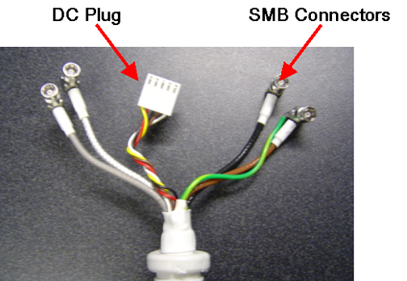

- 00000018WIA30AC0F20GYZ
- id_131068565.1
- Feb 20, 2025 6:39:44 AM
1.5T Cardiac Coil Troubleshooting
Prerequisites
| Personnel requirements | |||
|---|---|---|---|
| Required persons | Preliminary requirements | Procedure | Finalization |
| 1 | - | 30 minutes | - |
| Tools and test equipments | |||
|---|---|---|---|
| Item | Quantity | Part number | Manufacturer |
| Digital Multimeter (DMM) | 1 | - | - |
| (For Unified Phantom Set) TL Unified Phantom (for 1.5T) | 2 | 5343347 | - |
| Required conditions |
|---|
For HDx, HDxt, and HDe, the following coil configuration names must be installed to run the MCQA tool:
For Discovery MR450 and Optima MR450w, the following coil configuration names must be installed to run the MCQA tool: GE_HDx 8Cardiac. |
Overview
Procedure
Receiving No Signal
Problem:You are unable to pre-scan or are scanning and yet receiving no signal.
Possible Solution:
- Verify that the port which is used to plug in the coil either has a green light illuminated (Port A, B or C) or a green lock (Port P1, P2, P3 or P4) indicated. This indicates the coil is properly plugged into the system.
- Verify that the system has correctly detected the coil by checking in the Currently Connected in the GUI to select coils in Prescription as shown in the example in Currently Connected Coils Window in the Scan Screen.
Figure 1. Currently Connected Coils Window in the Scan Screen 
- Verify that the landmark is correct, see HDx Cardiac Array Setup for Coil SNR Test for help landmarking.
- Perform a continuity check on the output cable (Output Cable Check). The continuity check must be performed by a GE authorized Service Engineer.
- Verify that the coil is positioned with the cable exiting towards the bore.
- Verify that the cable is not looped or crossed.
There can also be a problem at the system interface port. Try scanning in all ports. If you still cannot get a signal, try to scan (transmit and receive) with the body coil. For this test, be sure to remove the imaging coil from the magnet bore before you scan with the substitute coil. If you still receive no signal the problem probably lies with the MR system. If the scan completes successfully, there is probably a problem with the coil. Contact GE for further assistance. If you are unable to scan with the substitute coil, there may be a system problem related to this particular coil type.
Image Quality
Problem:Poor IQ, shaded images, or if SNR fails.
Possible Solution:- Perform a continuity check on the output cable (Output Cable Check). The continuity check must be performed by a GE authorized Service Engineer.
- Verify that there are no loops in the cables.
- Verify that there are no metal or ferromagnetic objects close to the coil, patient or magnet (i.e., safety pin, hair pin).
- Verify that the coil is properly positioned.
- Verify that your center frequency is within the frequency adjustment range for your system.
- Verify that the R1, R2 and TG values from the pre-scan are within normally expected ranges.
If you have not done so already, perform the coil Quality Assurance test (refer to Operator’s Manual). If the values you obtain do not fall within normal operating parameters, investigate this further by performing a phantom scan with the substitute coil. For this test, be sure to remove the imaging coil from the magnet bore before you scan with the coil. If you still have the same problems, there is probably an MR system problem. If the substitute coil scan is satisfactory, acquire a scan using another coil of the exact same type (receive-only, phased array) and the same system coil selection. If the image quality is visibly improved, there may be a problem with the Cardiac coil. Contact GE for further assistance. If the image quality still suffers, there may be a system problem related to imaging with this type of coil.
Artifacts
Problem:There is a black line or signal void on the image.
Possible Solution:Verify that there is no metal present in the area being scanned in or on the patient.
Output Cable Check
Visual check
Before removing the cable assembly from the coil, visually inspect all coaxial connectors and pins on the system plug. If there are any broken, deformed or recessed pins or coaxial connectors, replace the cable assembly.
Remove the cable assembly from coil, refer to Cable Replacement.
RF Signal Channels Check
| Notice | |
|---|---|


The following procedure will rule out a short to GND for each of the signal pins detailed in the following table. This check does not determine continuity for each of the MC signal connections.
With the coil cable disconnected from the coil, use a multimeter (Set to Continuity) to assure an open circuit condition exists between the designated pin and GND for each signal channel shown in Output Cable Check.
| System Side Connector RF GND Shield | System Side Connector RF Center Pin | |
| Anterior | C1 | C1 |
| C2 | C2 | |
| C3 | C3 | |
| C4 | C4 | |
| Posterior | D1 | D1 |
| D2 | D2 | |
| D3 | D3 | |
| D4 | D4 |
DC Lines Continuity Check
With the coil cable disconnected from the coil, use a multimeter (set to continuity) to determine continuity between the designated pins for each control channel as shown in Output Cable Check. Be sure to plug the posterior cable onto the “Y” connector box before performing this test.
| System Side Connector Pin | Coil Side Connector Pin |
| J1 | Brown |
| J2 | Red |
| J3 | White |
| J4 | Yellow |
| J5 | Green |
| J6 | Blue |
| J7 | Purple |
| J8 | Gray |
| M6 | Black |
If any pair indicates an open, replace the output cable.